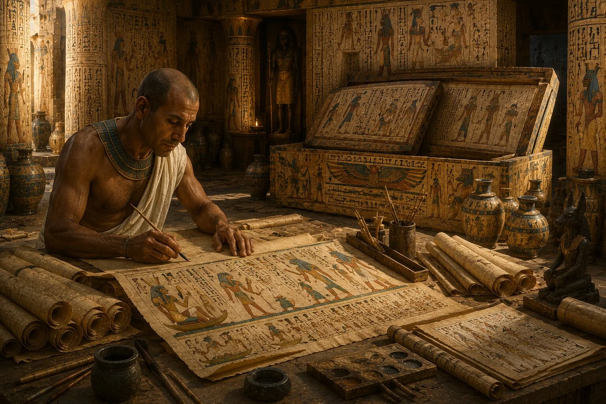
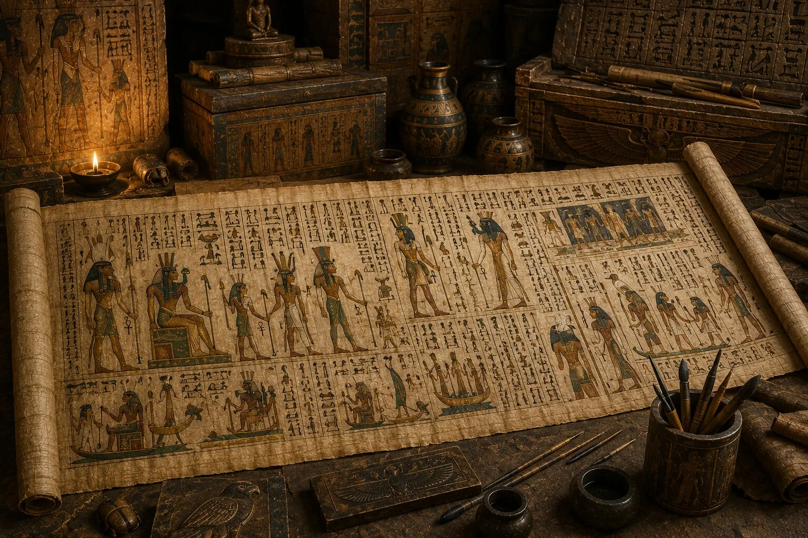
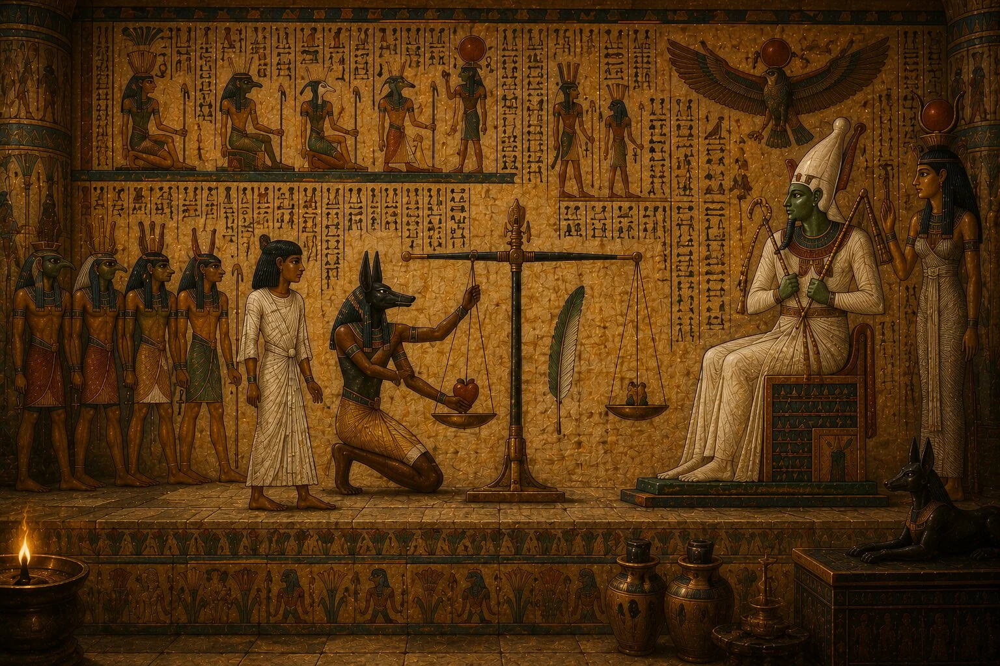
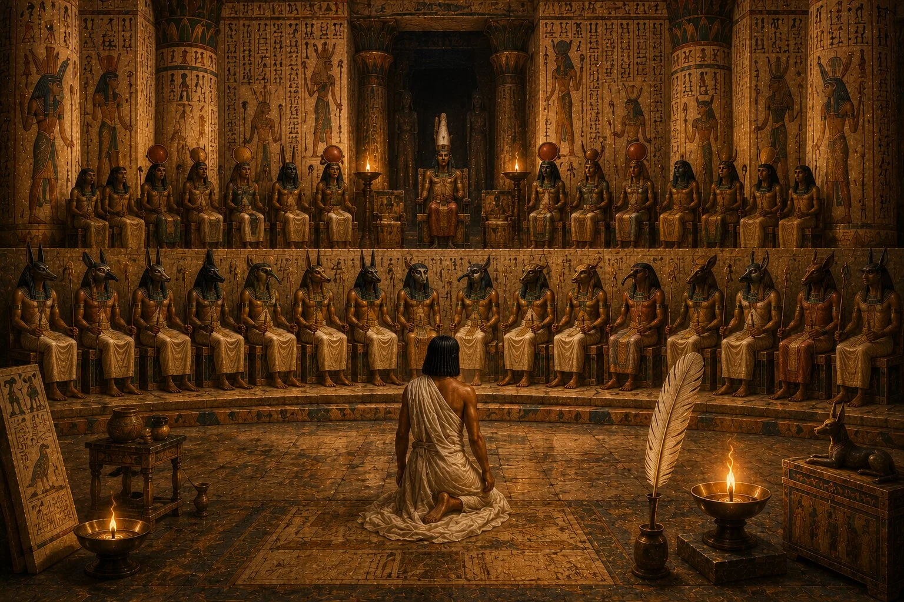
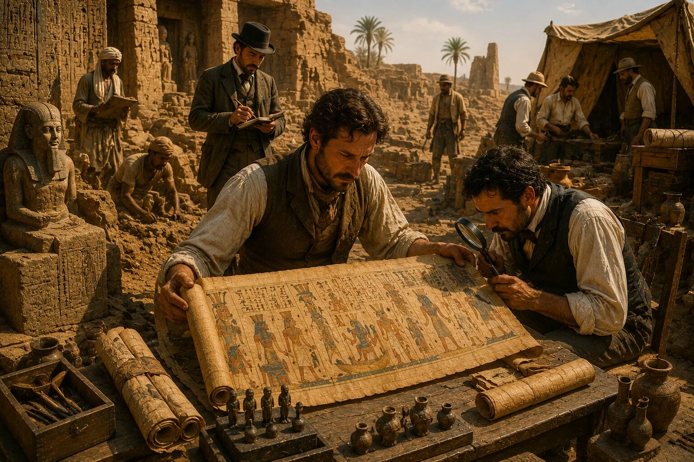

Antik Mısır denildiğinde akla genellikle piramitler, firavunlar ve mumyalar gelir. Ancak bütün bu görkemli dünyanın arkasında, Mısırlıların ölümden sonraki yaşam hakkındaki düşüncelerini anlamamızı sağlayan çok daha özel bir eser bulunur: Ölüler Kitabı.
Bu isim ilk duyulduğunda kulağa gizemli bir büyü kitabı gibi gelebilir. Hatta popüler kültürde çoğu zaman lanetlerle, kara büyülerle ya da doğaüstü güçlerle ilişkilendirilir. Oysa gerçekte Ölüler Kitabı, Antik Mısırlıların ölümden sonraki yaşam yolculuğunda karşılaşacakları tehlikelere karşı hazırlanmış bir rehberdi.
İlginç olan ise, bugün "Ölüler Kitabı" dediğimiz şeyin aslında tek bir kitap olmamasıdır. Antik Mısır'da farklı dönemlerde yaşayan insanlar için hazırlanan papirüs ruloları, dualar, ilahiler ve büyü metinleri zamanla bu ortak isim altında toplanmıştır. Bu nedenle her Ölüler Kitabı nüshası birbirinden farklıdır. Bazılarında onlarca metin bulunurken, bazılarında yüzlerce bölüm yer alabilir.
Mısırlılar için ölüm, yaşamın sona erdiği bir olay değildi. Onlara göre insan öldüğünde uzun ve zorlu bir yolculuk başlıyordu. Ruhun çeşitli sınavlardan geçmesi, tehlikeli varlıklarla karşılaşması ve sonunda ilahi bir yargılamaya ulaşması gerekiyordu. İşte Ölüler Kitabı'nın amacı da bu yolculuk sırasında ölüye rehberlik etmekti.
Bu nedenle Ölüler Kitabı yalnızca dini bir metin değil, aynı zamanda Antik Mısır'ın ölüm, ruh ve sonsuz yaşam hakkındaki düşüncelerinin en önemli kaynaklarından biri olarak kabul edilir.
Ölüler Kitabı Nedir?
Bugün Ölüler Kitabı olarak bilinen eser, Antik Mısır'da "Gündüz Ortaya Çıkma Kitabı" anlamına gelen bir isimle anılıyordu. Bu ifade ilk bakışta garip gelebilir. Ancak Mısırlılar için ölüm karanlığa gömülmek değil, yeni bir varoluş biçimine geçmek anlamına geliyordu. Bu nedenle ruhun yeniden ışığa çıkabilmesi ve sonsuz yaşama ulaşabilmesi büyük önem taşıyordu.
Ölüler Kitabı, ölen kişinin mezarına yerleştirilen ve ölümden sonraki yolculuğunda ona yardımcı olması amaçlanan büyülerden, dualardan ve kutsal metinlerden oluşuyordu. Bu metinler ruhun karşılaşabileceği engelleri aşmasına, tanrıların huzurunda doğru cevapları verebilmesine ve tehlikeli varlıklardan korunmasına yardımcı olmayı amaçlıyordu.
Ancak burada "büyü" kelimesini modern anlamda düşünmemek gerekir. Antik Mısır'da büyü ile din arasında kesin bir ayrım yoktu. Mısırlılar için doğru sözlerin söylenmesi, kutsal isimlerin bilinmesi ve belirli duaların okunması evrenin düzeniyle uyumlu hareket etmenin bir yoluydu. Bu nedenle Ölüler Kitabı'ndaki metinler yalnızca sihirli formüller değil, aynı zamanda dini bilgi ve kutsal rehberlik olarak görülüyordu.
Bugün arkeologların bulduğu Ölüler Kitabı papirüsleri incelendiğinde, bunların çoğunun belirli kişiler için özel olarak hazırlandığı anlaşılmaktadır. Bazı metinlerde ölen kişinin adı boş bırakılmış ve daha sonra eklenmiştir. Bu durum, belirli bölümlerin önceden hazırlanıp farklı kişiler için uyarlanabildiğini göstermektedir.
Bu yönüyle Ölüler Kitabı yalnızca kutsal bir eser değil, aynı zamanda Antik Mısır'ın ölüm kültürünü ve cenaze geleneklerini anlamamızı sağlayan eşsiz bir tarihî kaynaktır.
Ölüler Kitabı Nasıl Ortaya Çıktı?

Ölüler Kitabı bir anda ortaya çıkmış bir eser değildir. Aslında bu metinler, Antik Mısır'ın ölümden sonraki yaşam hakkındaki düşüncelerinin bin yılı aşkın süre boyunca gelişmesinin sonucudur. Bu nedenle Ölüler Kitabı'nı anlamak için onun kökenlerine bakmak gerekir.
Mısır tarihinin erken dönemlerinde ölümle ilgili kutsal metinler yalnızca firavunlara aitti. Bugün Piramit Metinleri olarak bilinen bu yazılar, Eski Krallık döneminde piramitlerin iç duvarlarına kazınıyordu. Amaç, firavunun ölümden sonra gökyüzüne yükselmesini ve tanrıların arasına katılmasını sağlamaktı. Bu metinler sıradan insanlar için değil, yalnızca hükümdarlar için hazırlanıyordu.
Yüzyıllar ilerledikçe bu ayrıcalık yavaş yavaş değişmeye başladı. Orta Krallık döneminde ortaya çıkan Lahit Metinleri, ölümden sonraki yaşamla ilgili bilgilerin daha geniş kesimlere ulaşmasını sağladı. Artık kutsal metinler yalnızca piramit duvarlarında değil, ahşap lahitlerin üzerinde de yer alıyordu. Böylece ölümden sonraki yaşam umudu sadece firavunlara ait olmaktan çıkmaya başladı.
Yeni Krallık dönemine gelindiğinde ise bu gelenek daha da gelişti ve bugün Ölüler Kitabı olarak bildiğimiz metinler ortaya çıktı. Artık kutsal sözler mezar duvarlarına kazınmak yerine papirüs rulolarına yazılıyor, resimlerle süsleniyor ve ölen kişinin mezarına yerleştiriliyordu. Bu değişim yalnızca teknik bir yenilik değildi. Aynı zamanda Mısırlıların ölümden sonraki yaşam hakkındaki düşüncelerinin de dönüşümünü yansıtıyordu.
Ölüler Kitabı'nın ortaya çıkışıyla birlikte ölümden sonraki yolculuk çok daha ayrıntılı biçimde anlatılmaya başlandı. Ruhun hangi kapılardan geçeceği, hangi tanrılarla karşılaşacağı, hangi sözleri söylemesi gerektiği ve nasıl korunacağı gibi konular detaylandırıldı. Böylece Ölüler Kitabı yalnızca bir dua koleksiyonu değil, adeta ölümden sonraki dünya için hazırlanmış kapsamlı bir rehbere dönüştü.
Bu nedenle birçok araştırmacı Ölüler Kitabı'nı, Antik Mısır'ın ölüm anlayışının ulaştığı en gelişmiş aşamalardan biri olarak görmektedir.
Ölüler Kitabı'nın İçinde Neler Vardı?

Modern bir okuyucu Ölüler Kitabı adını duyduğunda, baştan sona aynı şekilde yazılmış tek bir eser hayal edebilir. Ancak gerçekte durum çok farklıydı. Her papirüs rulosu birbirinden farklı olabiliyor ve içerdiği metinler ölen kişinin ihtiyaçlarına göre değişebiliyordu.
Bununla birlikte birçok Ölüler Kitabı'nda tekrar eden ortak bölümler bulunur. Bu metinlerin büyük kısmı dualardan, ilahilerden, koruyucu büyülerden ve ölümden sonraki yaşamda kullanılacak sözlerden oluşuyordu. Mısırlılar için doğru kelimeleri bilmek son derece önemliydi. Çünkü ruhun karşılaşacağı bazı kapılar yalnızca belirli sözler söylendiğinde açılabiliyor, bazı tehlikeler ise kutsal isimler sayesinde aşılabiliyordu.
Metinlerde sık sık tanrıların isimlerine rastlanır. Özellikle Osiris, Anubis, Ra ve Thoth gibi önemli tanrılar ölümden sonraki yolculukta merkezi rol oynuyordu. Ruhun bu tanrıları tanıması, onlara doğru şekilde hitap etmesi ve gerekli bilgileri bilmesi bekleniyordu.
Ölüler Kitabı'nın dikkat çekici özelliklerinden biri de metinlerle görsellerin birlikte kullanılmasıdır. Papirüslerde yer alan renkli sahneler yalnızca süsleme amacı taşımıyordu. Bunlar aynı zamanda metinlerin görsel açıklamalarıydı. Bugün müzelerde sergilenen birçok Ölüler Kitabı örneğinde ruhun yolculuğu, tanrılarla karşılaşmaları ve ölüm sonrası yargılama sahneleri ayrıntılı biçimde görülebilir.
Bu görseller sayesinde Antik Mısırlıların ölümden sonraki dünyayı nasıl hayal ettiklerini daha iyi anlayabiliyoruz. Çünkü onların gözünde bu dünya soyut bir kavram değil, ayrıntılarıyla tasvir edilebilen gerçek bir yerdi.
Ölüler Kitabı'ndaki Büyüler Ne Amaçla Kullanılıyordu?
Ölüler Kitabı'nın en dikkat çekici yönlerinden biri, içinde yüzlerce büyü ve kutsal formül bulunmasıdır. Ancak bu noktada modern dünyadaki büyü anlayışı ile Antik Mısır'ın büyü anlayışı arasındaki farkı göz önünde bulundurmak gerekir.
Bugün büyü denildiğinde akla genellikle doğaüstü güçler, gizemli ritüeller veya fantastik hikâyeler gelir. Antik Mısırlılar için ise büyü, evrenin işleyişinin doğal bir parçasıydı. Onlar bu güce "heka" adını veriyordu ve heka, tanrıların insanlara verdiği kutsal bir yetenek olarak kabul ediliyordu.
Bu nedenle Ölüler Kitabı'ndaki büyüler kötü niyetli ya da karanlık uygulamalar olarak görülmüyordu. Tam tersine, ruhun ölümden sonraki yolculuğunu güvenli şekilde tamamlamasına yardımcı olan kutsal bilgilerdi.
Bazı büyüler yılanlar ve tehlikeli yaratıklardan korunmayı amaçlıyordu. Bazıları ruhun ihtiyaç duyduğu yiyecek ve içeceklere ulaşmasını sağlamak için hazırlanmıştı. Bazı metinler ise kişinin belirli kapılardan geçebilmesi ya da tanrıların huzurunda doğru cevapları verebilmesi için gerekli sözleri içeriyordu.
Bu büyülerin ortak noktası, ruhun karşılaşacağı engelleri aşmasına yardımcı olmalarıydı. Çünkü Mısırlılar ölümden sonraki dünyanın huzurlu ama kolay olmayan bir yer olduğuna inanıyordu. Sonsuz yaşama ulaşabilmek için bilgi, hazırlık ve ilahi koruma gerekiyordu.
İşte Ölüler Kitabı'nın asıl amacı da buydu. Ölen kişiye yalnızca umut vermek değil, aynı zamanda onu bu uzun yolculuğa hazırlamaktı.
Kalbin Tartılması Sahnesi ve Osiris'in Mahkemesi

Ölüler Kitabı'nda yer alan onlarca sahne arasında hiçbiri Kalbin Tartılması kadar ünlü değildir. Bugün Antik Mısır denildiğinde insanların aklına gelen en ikonik tasvirlerden biri olan bu sahne, Mısırlıların ölümden sonraki yaşam hakkındaki düşüncelerini anlamak için de büyük önem taşır.
Mısırlılara göre bir insan öldüğünde yolculuğu hemen sona ermiyordu. Ruhun çeşitli sınavlardan geçmesi, tehlikeleri aşması ve sonunda ilahi bir mahkemeye ulaşması gerekiyordu. İşte bu mahkemede kişinin yaşamı boyunca yaptıkları değerlendiriliyordu.
Bu yargılamanın merkezinde kalp bulunuyordu.
Antik Mısırlılar kalbi yalnızca bedensel bir organ olarak görmüyordu. Onlara göre insanın düşünceleri, anıları, niyetleri ve ahlaki karakteri kalbin içinde saklıydı. Bu nedenle ölümden sonra kişinin gerçek doğasını ortaya çıkarabilecek tek şey de kalbiydi.
Yargılama sahnesinde Anubis, ölen kişinin kalbini büyük bir terazinin bir kefesine yerleştirirdi. Diğer kefede ise doğruluk, adalet ve kozmik düzenin simgesi olan Ma'at'ın tüyü bulunurdu. Eğer kişinin kalbi tüy kadar hafif çıkarsa, bu onun yaşamını doğru ve adil bir şekilde sürdürdüğü anlamına gelirdi.
Ancak kalp ağır gelirse durum çok daha farklıydı.
Böyle bir durumda dev bir yaratık olan Ammit devreye giriyordu. Aslan, timsah ve su aygırının özelliklerini taşıyan bu korkutucu varlığın görevi başarısız olan ruhları yok etmekti. Bu ceza sonsuz işkence anlamına gelmiyordu. Mısırlılar için asıl korkutucu olan şey, kişinin tamamen varlığını kaybetmesi ve sonsuz yaşama ulaşamamasıydı.
Yargılama sonucunda başarılı olan ruhlar ise Osiris'in huzuruna çıkıyordu. Tasvirlerde Osiris genellikle büyük bir taht üzerinde otururken gösterilir. Çevresinde çeşitli tanrılar bulunur ve ölümden sonraki dünyanın hükümdarı olarak son kararı temsil eder.
Bu sahnenin dikkat çekici yönlerinden biri, Mısırlıların ölümden sonraki yaşamı yalnızca büyüler veya ilahi koruma sayesinde kazanılabilecek bir ödül olarak görmemesidir. Ölüler Kitabı'nda yer alan büyüler ve dualar önemliydi, ancak kişinin yaşamı boyunca nasıl davrandığı da aynı derecede belirleyici kabul ediliyordu. Bu nedenle Kalbin Tartılması sahnesi yalnızca dini bir ritüeli değil, aynı zamanda ahlaki bir yargılamayı temsil eder.
Belki de bu yüzden bu sahne binlerce yıl sonra bile etkisini kaybetmemiştir. Çünkü insanların davranışlarının ölümden sonra da anlam taşıdığı düşüncesi, Antik Mısır'ın en güçlü inançlarından biriydi.
Ölüler Kitabı'ndaki En Ünlü Metinler

Ölüler Kitabı yüzlerce farklı büyü ve metinden oluşmasına rağmen, bazı bölümler diğerlerinden çok daha fazla ün kazanmıştır. Bunun nedeni yalnızca dini önemleri değil, aynı zamanda Antik Mısır'ın ölüm anlayışını en açık şekilde yansıtmalarıdır.
Bu metinlerden biri, araştırmacıların "Olumsuz İtiraflar" ya da "Masumiyet Beyanları" olarak adlandırdığı bölümdür. Kalbin Tartılması öncesinde ruhun çeşitli tanrıların huzurunda yaptığı bu konuşmalarda kişi yaşamı boyunca işlemediği suçları sıralar. Hırsızlık yapmadığını, cinayet işlemediğini, yalan söylemediğini ya da kutsal düzene zarar vermediğini ifade eder.
Bu bölüm son derece önemlidir çünkü Antik Mısır toplumunun ahlak anlayışı hakkında değerli bilgiler verir. Mısırlılar için yalnızca tanrılara ibadet etmek yeterli değildi. Aynı zamanda doğru davranmak, adaletli olmak ve toplumsal düzeni korumak da gerekliydi.
Ölüler Kitabı'nda dikkat çeken bir başka metin ise kalbin kişiye karşı tanıklık etmemesi için yazılmış dualardır. Mısırlılar kalbin insanın bütün sırlarını bildiğine inanıyordu. Bu nedenle bazı büyülerde kalbe seslenilir ve kişinin aleyhine konuşmaması istenirdi. Bu durum, kalbin ne kadar önemli bir sembol olarak görüldüğünü açıkça gösterir.
Metinler arasında güneş tanrısı Ra'nın kayığına katılmak, çeşitli kapılardan geçmek veya farklı varlıklara dönüşebilmek için hazırlanmış büyüler de bulunur. Bazı bölümlerde ruhun şahin, lotus çiçeği veya başka kutsal varlıklar şeklinde yeniden ortaya çıkabilmesi için gerekli sözler yer alır.
Bu çeşitlilik, Ölüler Kitabı'nın yalnızca bir dua koleksiyonu olmadığını gösterir. O, ölümden sonraki dünyanın nasıl işlediğine dair ayrıntılı bir rehberdir ve Mısırlıların hayal gücü kadar inanç dünyasını da gözler önüne serer.
Ölüler Kitabı Gerçekten Bir Sırlar Kitabı mıydı?
Modern dünyada Ölüler Kitabı'nın adı geçtiğinde çoğu insanın aklına gizemli sırlar, lanetler veya yasak bilgiler gelir. Bunun en büyük nedeni popüler kültürdür. Romanlar, filmler ve bilgisayar oyunları yıllar boyunca Ölüler Kitabı'nı doğaüstü güçlere sahip esrarengiz bir eser olarak göstermiştir.
Gerçekte ise durum daha farklıdır.
Ölüler Kitabı gizli bir örgütün sakladığı yasak bilgilerden oluşmuyordu. Aksine, ölümden sonraki yaşam için hazırlanmış dini metinlerin bir araya gelmesinden oluşuyordu. Mısırlılar bu bilgilerin ruha yardımcı olacağına inanıyor ve onları mezarlara yerleştiriyordu.
Elbette bu metinler herkes tarafından okunup anlaşılabilecek kadar basit değildi. İçlerinde çok sayıda sembol, tanrısal gönderme ve dini kavram bulunuyordu. Bu nedenle modern araştırmacılar bile bazı bölümlerin tam anlamını hâlâ tartışmaktadır. Ancak bu durum, Ölüler Kitabı'nı gizemli bir büyü kitabı yapmaz.
Onun gerçek sırrı başka bir yerde yatmaktadır.
Ölüler Kitabı, Antik Mısır insanının ölüm karşısında nasıl düşündüğünü anlamamızı sağlar. İnsanların ölümden korkmasına rağmen tamamen umutsuz olmadığını, aksine ölümden sonraki yaşam için hazırlık yaptığını gösterir. Bu nedenle eser yalnızca dini bir belge değil, aynı zamanda insanlık tarihinin ölüm karşısındaki en kapsamlı düşünce sistemlerinden birinin aynasıdır.
Belki de Ölüler Kitabı'nın asıl sırrı budur. İçindeki büyülerden veya sembollerden çok, onu yazan insanların dünyaya nasıl baktığını göstermesi.
Ölüler Kitabı'nın Keşfi ve Günümüze Ulaşması

Antik Mısır uygarlığının sona ermesinden sonra Ölüler Kitabı da yavaş yavaş unutuldu. Tapınaklar terk edildi, hiyeroglif yazısı okunamaz hâle geldi ve yüzyıllar boyunca bu metinlerin gerçek anlamı bilinmedi. İnsanlar papirüslerdeki resimleri görebiliyor, ancak ne anlattıklarını anlayamıyordu.
Bu durum 19. yüzyıla kadar büyük ölçüde değişmedi.
Napolyon'un Mısır seferiyle başlayan yoğun ilgi, Avrupa'da Antik Mısır araştırmalarının hızla gelişmesini sağladı. Ardından Rosetta Taşı'nın çözülmesiyle birlikte hiyerogliflerin okunabilmesi mümkün hâle geldi. Böylece mezarlarda bulunan papirüslerin içerikleri de yavaş yavaş anlaşılmaya başlandı.
"Ölüler Kitabı" adı da aslında Antik Mısırlılardan değil, modern araştırmacılardan gelir. 1840'lı yıllarda Alman Mısır bilimci Karl Richard Lepsius, farklı papirüs metinlerini inceleyerek bunları "Totenbuch" yani "Ölüler Kitabı" adı altında yayımladı. Bu isim zamanla yaygınlaştı ve bugün dünyanın her yerinde kullanılmaya başlandı.
Günümüzde British Museum, Louvre, Metropolitan Museum of Art ve Kahire Mısır Müzesi gibi birçok kurumda Ölüler Kitabı'na ait önemli papirüsler sergilenmektedir. Bunların arasında en ünlülerinden biri, ayrıntılı resimleriyle dikkat çeken Ani Papirüsü'dür. Yaklaşık 3.300 yıllık geçmişe sahip olan bu eser, Ölüler Kitabı'nın günümüze ulaşan en kapsamlı örneklerinden biri olarak kabul edilir.
Bu keşifler sayesinde araştırmacılar yalnızca Antik Mısır'ın dini inançlarını değil, aynı zamanda insanların ölüm, ahlak ve sonsuz yaşam hakkındaki düşüncelerini de daha iyi anlayabilmiştir. Bir zamanlar yalnızca mezarların karanlığında saklı kalan bu metinler, bugün insanlık tarihinin en önemli yazılı kaynakları arasında yer almaktadır.
Ölüler Kitabı Hakkında Yaygın Yanlış Bilgiler
Ölüler Kitabı'nın popüler kültürde sıkça kullanılması, onun hakkında birçok yanlış bilginin yayılmasına neden olmuştur. Bunların başında Ölüler Kitabı'nın tek bir eser olduğu düşüncesi gelir. Oysa bugün bu isim altında topladığımız metinler, farklı dönemlerde hazırlanmış ve içerikleri birbirinden değişebilen çok sayıda papirüsten oluşmaktadır.
Bir başka yaygın yanlış bilgi, Ölüler Kitabı'nın yalnızca büyülerden oluştuğu yönündedir. Gerçekte metinlerin içinde dualar, ilahiler, dini öğretiler, ahlaki beyanlar ve ölümden sonraki yaşamla ilgili rehberlik eden bölümler de bulunur. Bu nedenle onu yalnızca bir büyü kitabı olarak görmek son derece yanıltıcıdır.
Bazı kişiler Ölüler Kitabı'nın lanetler içerdiğini düşünür. Bu inanış büyük ölçüde modern filmlerden kaynaklanır. Antik Mısır mezarlarında koruyucu ifadeler ve kutsal metinler bulunabilse de Ölüler Kitabı'nın temel amacı insanlara zarar vermek değil, ölen kişiyi korumaktır.
Bir diğer yanlış yorum ise Ölüler Kitabı'nın yalnızca firavunlara ait olduğu düşüncesidir. İlk ölüm metinleri gerçekten de hükümdarlar için hazırlanmıştı. Ancak zamanla bu gelenek daha geniş kesimlere yayıldı ve maddi imkânı olan birçok kişi kendi Ölüler Kitabı nüshasına sahip olabildi.
Belki de en büyük yanlış anlamalardan biri, Mısırlıların ölümden sonraki yaşamı yalnızca büyüler sayesinde kazanabileceklerine inandıkları düşüncesidir. Oysa Kalbin Tartılması sahnesi bunun tam tersini gösterir. Mısırlılar için ahlaki davranışlar, adalet ve doğru bir yaşam sürmek en az kutsal metinler kadar önemliydi.
Bu nedenle Ölüler Kitabı'nı yalnızca mistik bir eser olarak görmek yerine, Antik Mısır toplumunun dünyaya bakışını yansıtan kapsamlı bir dini ve kültürel belge olarak değerlendirmek gerekir.
Sonuç: Ölüler Kitabı Neden Hâlâ İlgi Çekiyor?
Aradan üç binden fazla yıl geçmiş olmasına rağmen Ölüler Kitabı hâlâ dünyanın en çok merak edilen Antik Mısır eserlerinden biridir. Bunun nedeni yalnızca eski ve gizemli bir metin olması değildir. Asıl nedeni, insanlığın en temel sorularından bazılarına cevap aramasıdır.
İnsanlar binlerce yıldır ölümden sonra ne olacağını merak ediyor. Antik Mısırlılar da aynı soruyla karşı karşıyaydı. Ölüler Kitabı, onların bu soruya verdiği en ayrıntılı cevaplardan biridir. İçindeki metinler, dualar ve sahneler sayesinde ölümden sonraki yaşamı anlamlandırmaya çalışmış, bilinmeyene karşı bir düzen kurmuşlardır.
Bu eser aynı zamanda bize Antik Mısır'ın yalnızca piramitlerden ve mumyalardan ibaret olmadığını gösterir. O görkemli mezarların arkasında son derece karmaşık bir düşünce sistemi, gelişmiş bir dini gelenek ve ölümden sonraki yaşama duyulan güçlü bir inanç bulunuyordu.
Bugün Ölüler Kitabı'nı okuduğumuzda yalnızca eski bir uygarlığın metinleriyle karşılaşmayız. Aynı zamanda insanların ölüm karşısında umut, anlam ve güven arayışına da tanıklık ederiz. Belki de bu nedenle Ölüler Kitabı, binlerce yıl sonra bile etkisini kaybetmeden yaşamaya devam etmektedir.
Çünkü değişen çağlara rağmen insanların sorduğu en büyük sorulardan biri hâlâ aynıdır:
Ölümden sonra ne olur?
Sık Sorulan Sorular
Ölüler Kitabı gerçekten bir kitap mıydı?
Hayır. Bugün "Ölüler Kitabı" olarak adlandırdığımız eser aslında tek bir kitaptan oluşmaz. Farklı dönemlerde ve farklı kişiler için hazırlanmış papirüs rulolarındaki metinlerin modern araştırmacılar tarafından verilen ortak adıdır. Bu nedenle her Ölüler Kitabı nüshasının içeriği birbirinden farklı olabilir.
Ölüler Kitabı'nda gerçekten büyüler var mıydı?
Evet, ancak bu büyüler modern anlamda sihir veya kara büyü olarak düşünülmemelidir. Antik Mısırlılar bu metinleri ruhun ölümden sonraki yolculuğunda korunmasına yardımcı olan kutsal bilgiler olarak görüyordu. Bu nedenle büyüler, dualar ve dini öğretiler çoğu zaman iç içe geçmiştir.
Ölüler Kitabı'nı kimler kullanabiliyordu?
İlk ölüm metinleri yalnızca firavunlar için hazırlanıyordu. Ancak zamanla bu gelenek daha geniş kesimlere yayıldı. Özellikle Yeni Krallık döneminde maddi imkânı olan birçok kişi kendi adına hazırlanmış bir Ölüler Kitabı papirüsüne sahip olabiliyordu.
Kalbin Tartılması nedir?
Kalbin Tartılması, Antik Mısır'ın ölümden sonraki yaşam inancındaki en önemli yargılama sahnesidir. Bu törende kişinin kalbi, doğruluk tanrıçası Ma'at'ın tüyüyle tartılırdı. Eğer kalp tüy kadar hafif çıkarsa ruhun sonsuz yaşama ulaşabileceğine inanılırdı.
Ölüler Kitabı ile Anubis arasında nasıl bir ilişki vardır?
Anubis, Ölüler Kitabı'nda en sık karşılaşılan tanrılardan biridir. Özellikle Kalbin Tartılması sahnesinde teraziyi gözeten figür olarak tasvir edilir. Ayrıca cenaze ritüelleri ve ölümden sonraki yolculukla olan bağlantısı nedeniyle metinlerde önemli bir yere sahiptir.
Osiris'in Ölüler Kitabı'ndaki rolü nedir?
Osiris, ölümden sonraki dünyanın hükümdarı olarak kabul edilir. Yargılamayı başarıyla geçen ruhların sonunda onun huzuruna ulaştığına inanılırdı. Bu nedenle Ölüler Kitabı'nın birçok bölümünde Osiris merkezi bir figür olarak karşımıza çıkar.
Ölüler Kitabı lanetler içeriyor muydu?
Popüler kültürde bu yönde birçok anlatı bulunsa da Ölüler Kitabı'nın temel amacı lanetlemek değil korumaktır. Metinlerin büyük bölümü ruhun güvenli şekilde yolculuk etmesini sağlamak, tehlikelerden korunmasına yardımcı olmak ve sonsuz yaşama ulaşmasını kolaylaştırmak için hazırlanmıştır.
Günümüze ulaşan en ünlü Ölüler Kitabı hangisidir?
Günümüze ulaşan en ünlü örneklerden biri Ani Papirüsü'dür. Yaklaşık MÖ 13. yüzyıla tarihlenen bu eser, içerdiği ayrıntılı resimler ve kapsamlı metinler sayesinde Ölüler Kitabı'nın en önemli örneklerinden biri olarak kabul edilir.
Kaynakça
- Assmann, Jan. Death and Salvation in Ancient Egypt. Cornell University Press, 2005.
- Faulkner, Raymond O. The Ancient Egyptian Book of the Dead. British Museum Press, 2010.
- Taylor, John H. Journey Through the Afterlife: Ancient Egyptian Book of the Dead. British Museum Press, 2010.
- Hornung, Erik. The Ancient Egyptian Books of the Afterlife. Cornell University Press, 1999.
- Allen, Thomas George. The Book of the Dead or Going Forth by Day. University of Chicago Press.
- Pinch, Geraldine. Egyptian Mythology: A Guide to the Gods, Goddesses, and Traditions of Ancient Egypt. Oxford University Press, 2004.
- Wilkinson, Richard H. The Complete Gods and Goddesses of Ancient Egypt. Thames & Hudson, 2003.
- Hart, George. The Routledge Dictionary of Egyptian Gods and Goddesses. Routledge, 2005.
- British Museum – Book of the Dead Collection.
- The Metropolitan Museum of Art – Ancient Egyptian Funerary Texts Collection.
- University College London (UCL) – Digital Egypt for Universities Project.
- Griffith Institute, Oxford – Ancient Egyptian Religious Texts Archive.